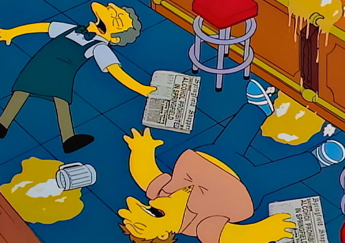

Ley seca en Springfield
El 16 de marzo de 1997 se estrenó el capítulo de Los Simpsons llamado ‘Homero contra la prohibición‘ uno que ha sido señalado como de los mejores de la serie. Además nos presenta a Homero como ‘El Barón de la Cerveza‘ contra el detective anti alcohol, Elio Pez.
Todo comienza con la celebración del Día de San Patricio, donde por accidente Bart se emborracha, causando una conmoción en Springfield. Por lo que al otro día todos los personajes de Los Simpsons se reúnen en una asamblea para solucionar esto. Donde un grupo de madres buscó prohibir el alcohol, algo que el Alcalde Diamante evitaba a toda costa.
Sin embargo, de inmediato se dan cuenta que entre otras leyes muy extrañas, en Springfield había una ley de prohibición vigente desde hace 200 años. Así que todo el alcohol de la ciudad es enterrado en el basurero. Por lo que la famosa cervecería Duff lanza su trago sin alcohol, aunque se va a la banca rota minutos después.
75 días después de eso, todo parece ir bien en Springfield. Sin embargo, gracias a la mafia y la ineficacia policial, Moe vende cerveza usando como fachada una tienda de mascotas. Aunque son descubiertos y el Jefe Gorgory es cesado de sus funciones, llegando a Springfield el detective: Elio Pez.

Ahora sí erradicada la bebida, no hay salida. Pero Homero desentierra el alcohol y comienza a transportarlo al Bar de Moe por medio de canaletas dentro de bolas de bowling. Ahí gana el apodo del ‘Barón de la Cerveza‘ y es capaz de desafiar a Pez a kilómetros de distancia.
Hasta que un día todo el alcohol se acaba y Homero comienza a producirlo él mismo. Desatando explosiones en la casa de los Simpsons. Así que aconsejado por Marge y buscando ayudar a Gorgory, se entrega como si el nefasto policía lo hubiera atrapado. Aunque claro, debiendo afrontar la arcaica pena de la catapulta.
Habiéndola probado en un gato, el destino de Homero parece seguro. Pero gracias a Marge gana el tiempo suficiente para que la usen en Elio Pez y descubran que la prohibición se abolió hace 199 años en la ciudad. Desatando un frenesí alcohólico con una de las grandes frases de Homero: «Por el alcohol, la causa y la solución de todos los problemas de la vida«.